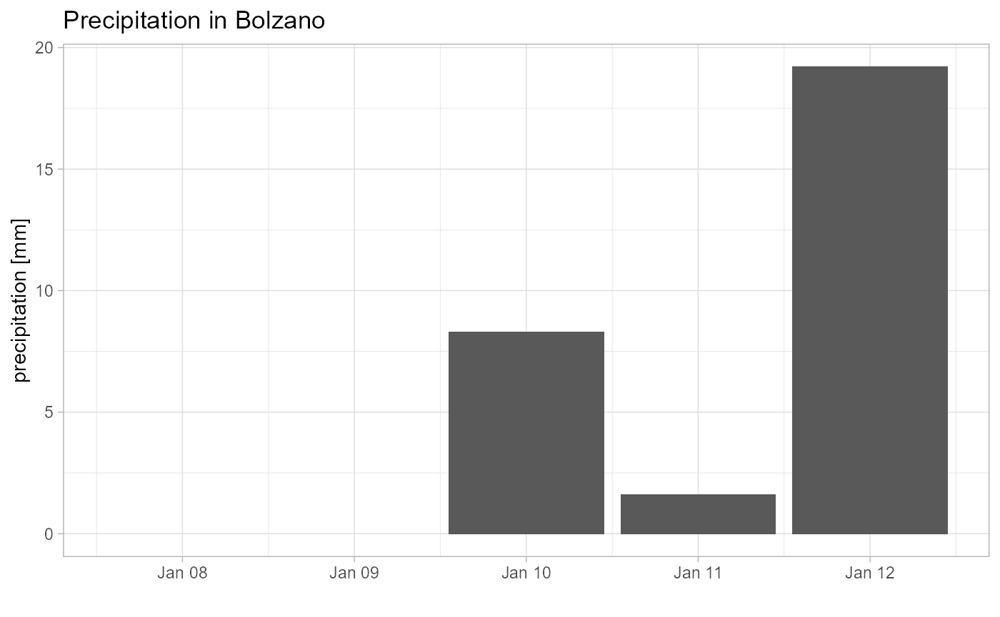

example_bozen.Rmd
# the path to the directory of the NetCDFs which are stored for each month
path_ncdf = "\\\\projectdata.eurac.edu/projects/Proslide/PREC_GRIDS/"
# then we need a path to a spatial object (shape, geopackage...)
path_spatial = here(... = "../../../Desktop/bolzano.gpkg")
#> Warning: Arguments must be unnamed
spatial.obj = read_sf(path_spatial)
head(spatial.obj)
#> Simple feature collection with 1 feature and 0 fields
#> geometry type: POINT
#> dimension: XY
#> bbox: xmin: 11.34899 ymin: 46.49622 xmax: 11.34899 ymax: 46.49622
#> geographic CRS: WGS 84
#> # A tibble: 1 x 1
#> geometry
#> <POINT [°]>
#> 1 (11.34899 46.49622)#> tmap mode set to interactive viewing
res = get_rainfall(data_path = path_ncdf,
spatial.obj = spatial.obj,
dts = dts,
seqq = seqq,
days_back = days_back)
#> [1] "Input are points, thus not using any function"
#> [1] "Input are points, thus not using any function"
#> [1] "Input are points, thus not using any function"
lapply(res, head)
#> $`20160112`
#> Simple feature collection with 1 feature and 5 fields
#> geometry type: POINT
#> dimension: XY
#> bbox: xmin: 680252 ymin: 5151864 xmax: 680252 ymax: 5151864
#> CRS: +proj=utm +zone=32 +ellps=WGS84 +units=m +no_defs
#> 20160108 20160109 20160110 20160111 20160112 geometry
#> 1 0 0 8.3 1.6 19.2 POINT (680252 5151864)
#>
#> $`20160113`
#> Simple feature collection with 1 feature and 5 fields
#> geometry type: POINT
#> dimension: XY
#> bbox: xmin: 680252 ymin: 5151864 xmax: 680252 ymax: 5151864
#> CRS: +proj=utm +zone=32 +ellps=WGS84 +units=m +no_defs
#> 20160109 20160110 20160111 20160112 20160113 geometry
#> 1 0 8.3 1.6 19.2 0.8 POINT (680252 5151864)
#>
#> $`20160114`
#> Simple feature collection with 1 feature and 5 fields
#> geometry type: POINT
#> dimension: XY
#> bbox: xmin: 680252 ymin: 5151864 xmax: 680252 ymax: 5151864
#> CRS: +proj=utm +zone=32 +ellps=WGS84 +units=m +no_defs
#> 20160110 20160111 20160112 20160113 20160114 geometry
#> 1 8.3 1.6 19.2 0.8 0 POINT (680252 5151864)